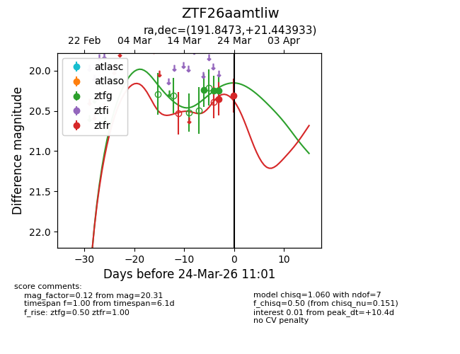
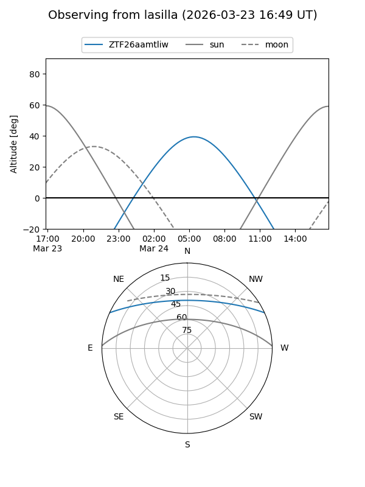
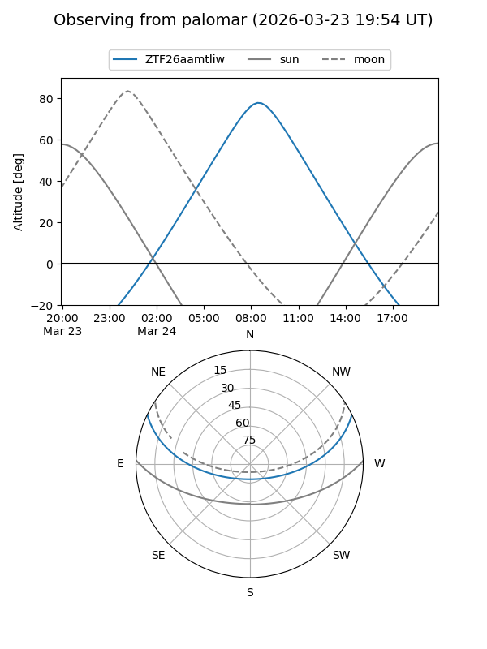
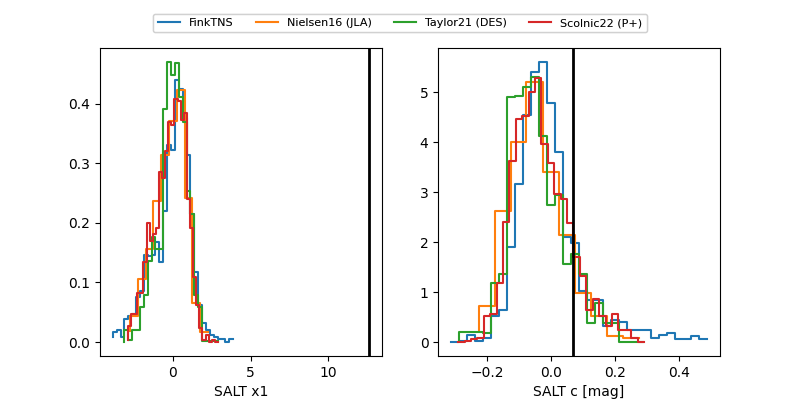

ZTF26aamtliw
Target ZTF26aamtliw at 2026-03-24 11:03
Aliases and brokers:
FINK: link
Lasair: link
ALeRCE: link
alt names
ZTF26aamtliw (ztf,fink_ztf)
Coordinates:
equatorial (ra, dec) = 191.8473,+21.44393
equatorial (HMS+DMS) = 12:47:23.35,+21:26:38.16
galactic (l, b) = (293.5003,+84.24139)
Flags:
Photometry:
last ztfg=20.25, ztfr=20.31
3 ztfg, 2 ztfr detections
Lightcurve

Visibility


Additional plots
